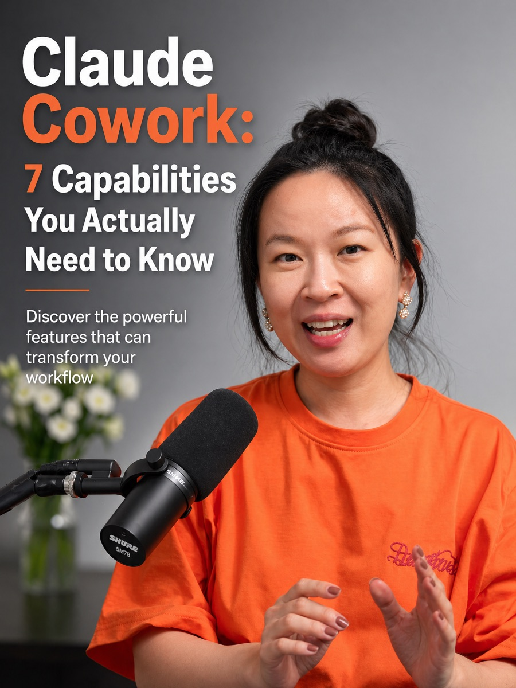

Claude · AI Tools

I've been using AI tools seriously for three years. In that time I've watched Claude go from a capable chatbot to something that genuinely runs parts of my workflow. But most people I meet are still using Claude the same way they use Google — type a question, read the answer, close the tab.
Claude Cowork (Claude's agentic mode, sometimes called Claude Code or Claude Projects in different contexts) is a different product entirely. Here are the seven capabilities that actually matter, explained without the jargon.
Quick note: "Claude Cowork" refers to using Claude in an agentic, persistent context — with file access, memory, and tool connections — as distinct from the standard claude.ai chat interface.
| Feature | Claude Chat | Claude Cowork |
|---|---|---|
| Remembers past conversations | ✗ No | ✓ Yes |
| Reads your files & documents | ✗ No | ✓ Yes |
| Runs code & actions | ✗ No | ✓ Yes |
| Connects to external tools | ✗ No | ✓ Via MCP |
| Works on multi-step tasks | Limited | ✓ Yes |
| Edits documents in place | ✗ No | ✓ Yes |
| Spawns sub-agents | ✗ No | ✓ Yes |
Capability 01
Claude can remember context across sessions — your preferences, your ongoing projects, your contacts, your communication style. This changes everything. Instead of re-explaining yourself every conversation, Claude builds a working model of how you operate. For business use, this means you can say "draft a reply in my usual tone" and it actually knows what that means.
Capability 02
Point Claude at a folder and it can read, edit, create, and organise files autonomously. Give it your proposal templates, your CRM export, your meeting notes — and it works with them directly. No copying and pasting. This is the capability that turns Claude from a writing assistant into an actual work tool.
Capability 03
MCP (Model Context Protocol) is how Claude connects to external services — WhatsApp, Notion, Google Drive, Slack, databases, APIs. Think of it as Claude's plugin system, but open-source and increasingly well-supported. As of early 2026, there are hundreds of MCP servers available. If a tool has an API, someone has probably built an MCP for it.
Capability 04
Claude can take a high-level instruction and execute it across many steps without you supervising every move. "Research the top 10 AI conferences in Southeast Asia, create a spreadsheet with dates and submission deadlines, and draft outreach emails for each" is a real task it can complete end-to-end. You review the output, not every intermediate step.
Capability 05
Claude can write code and run it — not just generate it for you to copy. This means it can process data, build automations, scrape websites, generate reports, and more, all in a single conversation. You don't need to be technical. You describe what you want, Claude writes and runs the code, and shows you the result.
Capability 06
For complex projects, Claude can spawn multiple sub-agents to work in parallel — one researching, one drafting, one reviewing — then combine their outputs. This dramatically speeds up work that would otherwise require you to manage different AI sessions manually. It's genuinely useful for anything involving research + writing + formatting in one workflow.
Capability 07
You can give Claude persistent instructions that shape every response — your brand voice, your preferred formats, rules about what to never do, your role and context. Combined with memory, this means Claude increasingly operates as a trained assistant who knows your business, not a generic AI you're prompting from scratch each time.
Don't try to use all seven capabilities at once. Pick one pain point in your work — a repetitive task, a slow process, something you dread doing — and build one workflow around that. Get it working well before expanding.
In Cowork SG we share these workflows openly. Members post what's working, what's broken, and what surprised them. That shared learning is why people in the community move faster than those figuring it out alone.
Join the community WhatsApp group — we demo these workflows live and share everything for free.
Join Cowork SG Free →